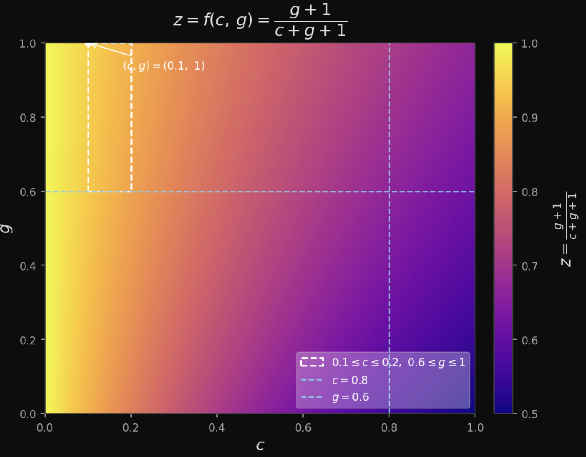

A Simple Model
I was thinking about this while on a car ride to the post office. I was getting my first adult passport and my sister asked me if we brought a necessary document. I, without looking since I felt sure about its presence, said yes. We then went to the post office and everything went smoothly.On the car ride there (~ $10$ min), I thought about a simple model. I had two actions: Nothing or Check. If I did Nothing when the document was in the car then I would lose 1 util (enormous). But if I did Check (i.e. check the file) and the document wasn’t in the car, I would lose c utils.
If the document was present & I did Nothing, then I would gain $0$ utils. However, if the document wasn’t present and I did Check then I would receive $g$ utils (gratitude). In this model, it wouldn’t make sense to “randomize” my actions since it’s not like this happens every day and I have a particular frequency of how often I do Nothing.
| Actions/States | $Present$ | $Not$ $Present$ |
|---|---|---|
| $N(othing)$ | $0$ | $-1$ |
| $Check$ | $-c$ | $g$ |
Okay, so this is a pretty stupid model, but I was satisfied due to the following observation. I felt so averse to considering a strategy where I randomized (setting a frequency among multiple trials) between doing nothing or something. However, I had no issue with picking a probability to represent my belief about the presence of the document in the car. Isn’t that so cool? Within a model of choice, the Bayesian and Frequentist philosophy towards what a probability is are very much present.
